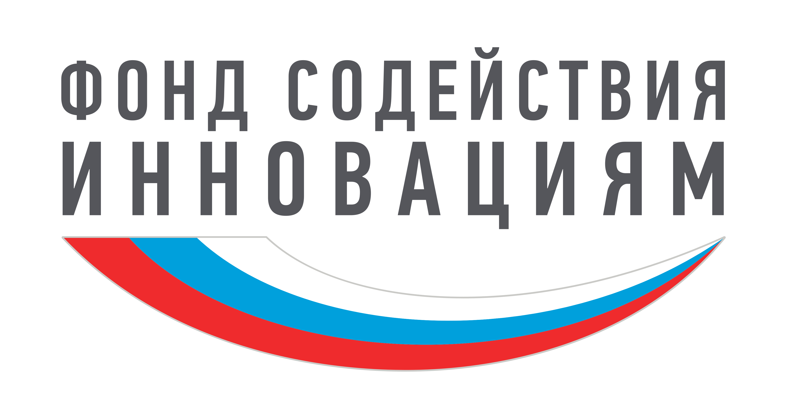
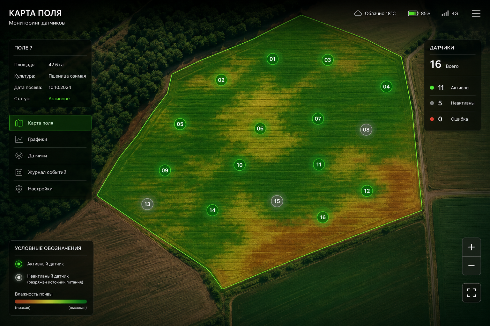
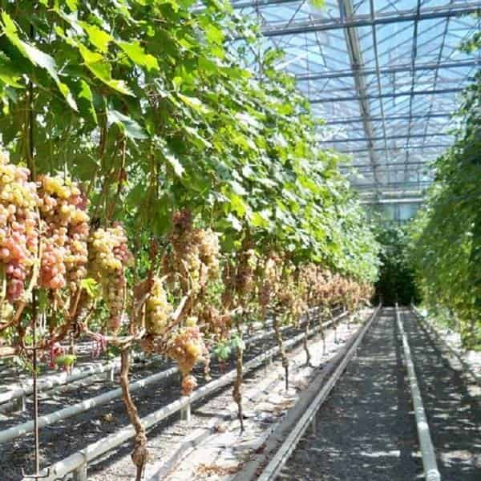

Фонд содействия инновациямAgroHarvest превращает саму почву в источник энергии для беспроводных датчиков влажности и температуры. Без батареек. Без замены. Без выезда в поле.
Батарейка в почвенном датчике живёт 6–12 месяцев. Дальше — либо выезд агронома для замены, либо слепая зона в мониторинге поля.
Один выезд для замены батареек на 50 датчиков в поле площадью от 200 га занимает у агронома целый день. При парке в 200+ устройств замена становится отдельной строкой операционных расходов.
Датчик, у которого разрядилась батарея, не подаёт сигнал тревоги — он просто замолкает. Хозяйство узнаёт о проблеме с поливом постфактум, когда урожайность уже упала.
При окупаемости системы точного земледелия в 2–3 сезона ежегодная замена батареек в сотнях точек съедает значимую часть экономического эффекта от самого мониторинга.

Никакой магии — только электрохимия, конденсатор и радиомодуль, работающие в связке.
Два электрода из разных металлов, погружённые в почву, образуют гальваническую пару. Разница электрохимических потенциалов создаёт постоянный слабый ток — тот же принцип, что в лимонной батарейке, только источник — влажный грунт с растворёнными солями.
Ток слишком слабый, чтобы напрямую питать радиопередатчик. Поэтому энергия копится в суперконденсаторе постепенно, в течение минут или часов — как медленно наполняющийся резервуар, — пока не наберётся заряд, достаточный для одной передачи.
Как только накопленного заряда хватает, модуль LoRa включается на несколько миллисекунд, отправляет пакет данных (влажность, температура, уровень заряда) на приёмную станцию — и снова засыпает, экономя каждый микроджоуль.
Датчик стоит в земле, часто под пологом растений или мульчей — там, где солнца либо нет, либо оно неудобно и уязвимо к загрязнению.
Почва — стабильный источник энергии именно там, где стоит датчик: не нужно ни солнца, ни ветра, ни выездов на замену. Чем выше влажность почвы, тем сильнее генерируемый ток — источник питания усиливается ровно тогда, когда данные нужнее всего.
Не абстрактная «инновационность», а конкретные операционные эффекты.
Ноль выездов на замену источника питания за весь срок эксплуатации датчика. Агроном тратит время на анализ данных, а не на логистику батареек.
Датчик не «засыпает» между заменами батарей — временной ряд влажности и температуры остаётся сплошным, без пропусков, критичных для моделей прогноза полива.
Экономика при развёртывании 500 датчиков не ухудшается — стоимость обслуживания на единицу не растёт с ростом парка, в отличие от батарейных решений.
Устройство одинаково работает под мульчей, под навесом теплицы и в открытом поле — там, где солнечная генерация энергии невозможна физически.
При горизонте в 5 лет совокупная стоимость владения ниже, чем у батарейных аналогов, за счёт исключения регулярной закупки и логистики элементов питания.
Одни и те же измеряемые параметры — разная экономика эксплуатации.
| Параметр | Батарейный датчик | AgroHarvest |
|---|---|---|
| Источник питания | Литиевая батарея | Почвенный гальванический элемент + аккумулятор |
| Замена источника питания | Каждые 6–12 месяцев | Не требуется |
| Автономность | Ограничена емкостью батареи | Потенциально неограниченная при достаточной влажности почвы |
| Необходимость обслуживания | Периодическая замена батареи | Минимальное обслуживание |
| Интервал передачи | 15–60 мин | От 15 мин |
| Протокол передачи | LoRa / NB-IoT | LoRa |
| Частота | 433 / 868 МГц | 433 / 868 МГц |
| Дальность передачи | До 10 км | До 1 км |
| Работа под мульчей | Ограничена сроком службы батареи | Без ограничений по ресурсу источника питания |
| Рабочая температура | −20…+60 °C | −20…+60 °C |
| Класс защиты корпуса | IP67 | IP55 |
| Экологичность | Требуется утилизация батарей | Без регулярной замены батарей |
От открытых полевых культур до защищённого грунта.
Мониторинг влажности на разных глубинах корневой зоны для пшеницы, кукурузы и подсолнечника — точный полив без пересушивания и переувлажнения.
Датчики под мульчей и в грунте теплиц, где солнечная зарядка невозможна, а стабильность данных критична для автоматического полива.

Многолетние насажденияДолгосрочная установка на многолетних насаждениях — раз установил, забыл на годы, данные идут непрерывно весь вегетационный период и зимой.
Плотная сеть датчиков для исследовательских задач агротехнологий, где важна синхронность и непрерывность рядов данных.
Данные для инженеров и агрономов.
Полная цепочка передачи данных — прозрачно, от электрода до экрана.
Гальванический элемент + датчики влажности/температуры + LoRa-модуль. Автономная герметичная капсула.
Принимает сигналы от всех датчиков в радиусе до 10 км, агрегирует пакеты и передаёт их через интернет.
Приём, хранение временных рядов, обработка данных, расчёт рекомендаций по поливу.
Веб-интерфейс и push-уведомления: карта поля, история, алерты по критическим значениям.
Достаточно для одной передачи пакета данных каждые 15–30 минут при нормальной влажности. Это на порядки меньше, чем нужно для непрерывной работы, но ровно столько, сколько нужно для периодического мониторинга.
Генерация тока падает вместе с влажностью — это ожидаемое поведение, а не поломка. Само падение выработки энергии — дополнительный косвенный индикатор пересыхания почвы.
Электроды медленно расходуются в процессе реакции, но рассчитаны на срок, кратно превышающий срок службы батарейки — счёт идёт на годы, а не месяцы.
Да, и это даже увеличивает выработку тока за счёт повышенной ионной проводимости — состав электролита почвы учитывается при калибровке партии датчиков.
До 10 км в прямой видимости, 1–2 км в условиях реального поля с растительностью. Для больших площадей используется сеть из нескольких гейтвеев.
Уточните вашей моделью монетизации — подписка, разовая покупка или лицензия для хозяйства.
Директор
Жилин Руслан Сергеевич
Телефон
+7 (963) 388-70-17Электронная почта
При поддержке
Фонд содействия инновациям